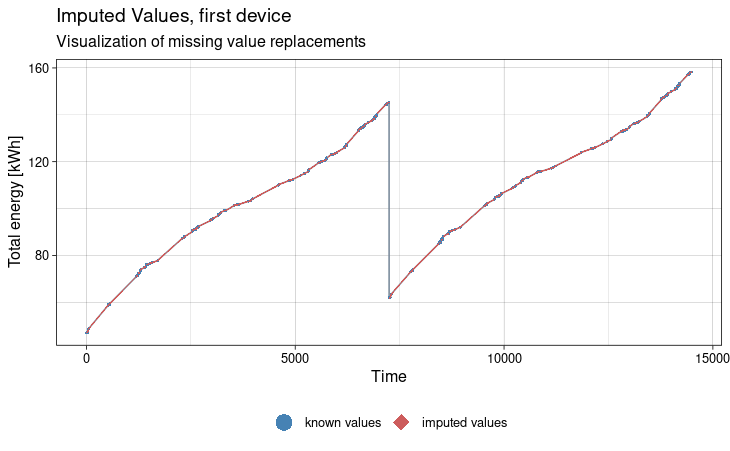
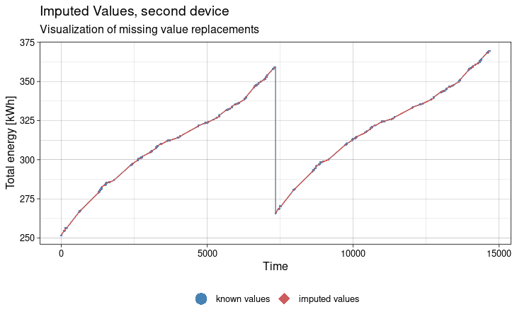
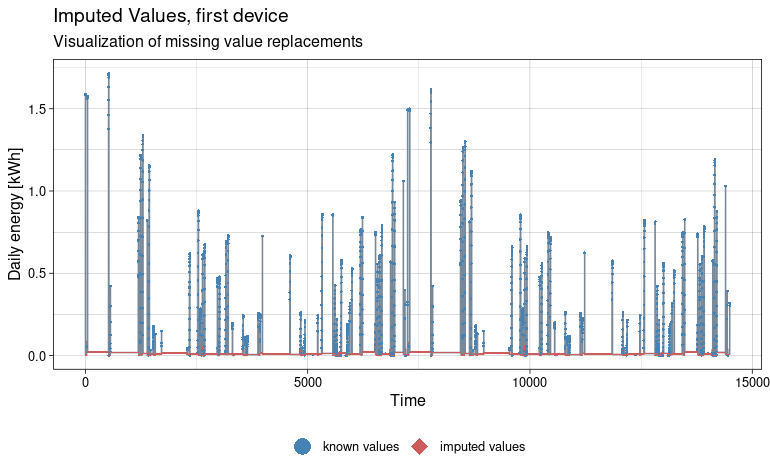
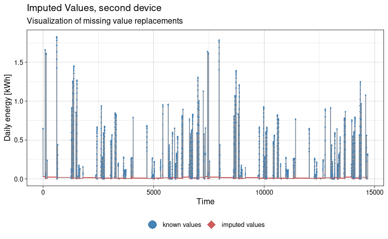

library(tsibble, warn.conflicts = FALSE)
library(pins)
library(dplyr, warn.conflicts = FALSE)
library(imputeTS, warn.conflicts = FALSE)Data Visualization
The collected values from the vignette Local Data Collection may be nicely visualized, but require a bit of pre-processing and formatting.
Recall pinned dataset
After some time of background data collection, it is now time to recall the collected data and bring them to the light.
board <- board_local()
inverter_df <- board |>
pin_read("inverter_data")
head(inverter_df)
#> # A tibble: 6 × 6
#> date device_id inverter output_power today_energy lifetime_energy
#> <dttm> <chr> <chr> [W] [kW/h] [kW/h]
#> 1 2024-09-22 19:35:41 E07000011776 1 0 0.646 252.
#> 2 2024-09-22 19:35:41 E07000011776 2 0 0.654 266.
#> 3 2024-09-22 19:43:29 E07000011776 1 0 0.647 252.
#> 4 2024-09-22 19:43:29 E07000011776 2 0 0.654 266.
#> 5 2024-09-24 19:09:59 E07000011776 1 6 1.66 255.
#> 6 2024-09-24 19:09:59 E07000011776 2 6 1.64 269.Convert into time-series
We now turn the tibble into a tsibble time-series, in order to be able to use time-series specific functions.
The time-series is chosen to be regular on the 30 minutes
interval, and we temporarily remove the units that are not yet
{tsibble} friendly. We use fill_gaps() to make an explicit
index entry in the time series, whenever data exists.
inverter_ts <- inverter_df |>
mutate(time_index = date |> lubridate::floor_date(unit = "30 minutes"),
device_inverter = stringr::str_c(device_id, "_", inverter)) |>
summarize(.by = c(time_index, device_id, inverter, device_inverter),
lifetime_energy = max(lifetime_energy),
today_energy = max(today_energy),
output_power = mean(output_power)) |>
units::drop_units() |>
# convert to time-series
as_tsibble(key = c(device_id, inverter, device_inverter),
index = time_index ) |>
# explicit gaps
fill_gaps()
head(inverter_ts)
#> # A tsibble: 6 x 7 [30m] <?>
#> # Key: device_id, inverter, device_inverter [1]
#> time_index device_id inverter device_inverter lifetime_energy today_energy output_power
#> <dttm> <chr> <chr> <chr> <dbl> <dbl> <dbl>
#> 1 2024-09-24 19:00:00 E07000011433 1 E07000011433_1 47.0 1.59 6
#> 2 2024-09-24 19:30:00 E07000011433 1 E07000011433_1 47.0 1.59 0
#> 3 2024-09-24 20:00:00 E07000011433 1 E07000011433_1 NA NA NA
#> 4 2024-09-24 20:30:00 E07000011433 1 E07000011433_1 NA NA NA
#> 5 2024-09-24 21:00:00 E07000011433 1 E07000011433_1 NA NA NA
#> 6 2024-09-24 21:30:00 E07000011433 1 E07000011433_1 NA NA NAOh, the size of the filled gap tsibble is large, and missing values comes very early in the data. Now we realize we have only around 8% of completeness in the data. This will require us a strong effort in imputation.
Naive imputation
lifetime_energy is a monotonic series, and thus is
correctly imputed with a linear interpolation.
We start with a naive imputation of today_energy series
being the delta between two steps of lifetime_energy.
Despite being globally correct, it is far from being representative of the daily seasonality of photo-voltaic energy production.
full_inverter <- inverter_ts |>
# impute 'lifetime_energy' gaps with a linear interpolation
mutate(
lifetime_energy = na_interpolation(lifetime_energy, option = "linear"),
today_energy = if_else(
inverter == lag(inverter),
coalesce(today_energy, lifetime_energy - lag(lifetime_energy)),
today_energy
)
)Gaps visualization
{imputeTS} provides a good toolset to visualize the imputed values in the time-series :
ggplot_na_imputations(x_with_na = inverter_ts |> filter(device_id == "E07000011433") |> pull(lifetime_energy),
x_with_imputations = full_inverter |> filter(device_id == "E07000011433") |> pull(lifetime_energy),
ylab = "Total energy [kWh]",
title = "Imputed Values, first device",
size_imputations = 0.2,
size_points = 0.6
)
ggplot_na_imputations(x_with_na = inverter_ts |> filter(device_id == "E07000011776") |> pull(lifetime_energy),
x_with_imputations = full_inverter |> filter(device_id == "E07000011776") |> pull(lifetime_energy),
ylab = "Total energy [kWh]",
title = "Imputed Values, second device",
size_imputations = 0.2,
size_points = 0.6
)

ggplot_na_imputations(x_with_na = inverter_ts |> filter(device_id == "E07000011433") |> pull(today_energy),
x_with_imputations = full_inverter |> filter(device_id == "E07000011433") |> pull(today_energy),
ylab = "Daily energy [kWh]",
title = "Imputed Values, first device",
size_imputations = 0.2,
size_points = 0.6)
ggplot_na_imputations(x_with_na = inverter_ts |> filter(device_id == "E07000011776") |> pull(today_energy),
x_with_imputations = full_inverter |> filter(device_id == "E07000011776") |> pull(today_energy),
ylab = "Daily energy [kWh]",
title = "Imputed Values, second device",
size_imputations = 0.2,
size_points = 0.6)
